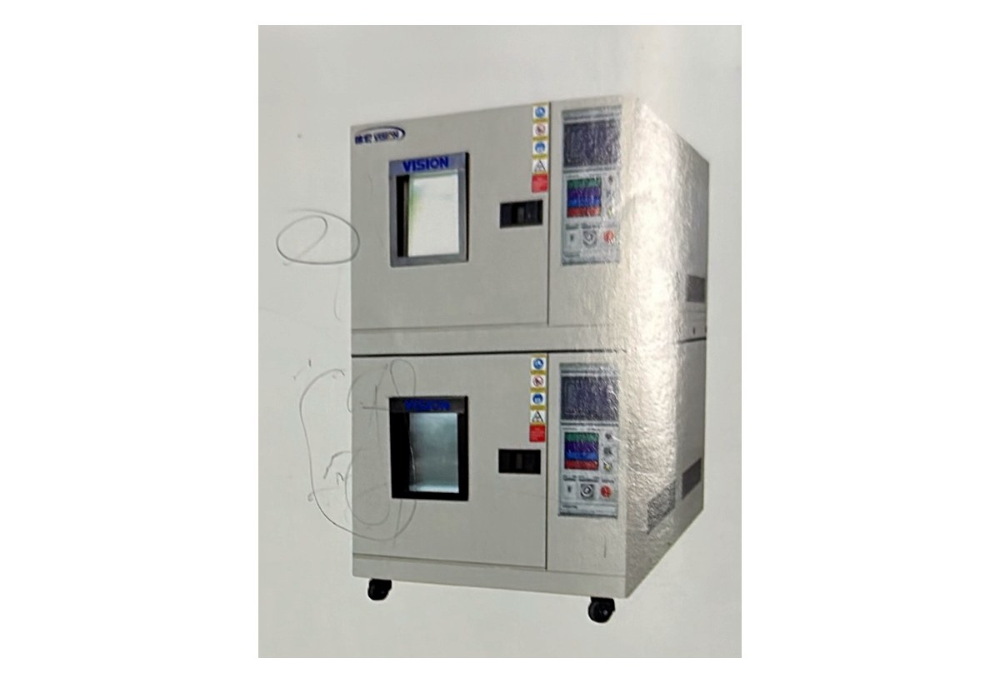

JHHS SERIES
多层式恒温恒湿试验箱
上下双层独立试验空间，适合同时进行多组温湿度可靠性试验。
| 型号 | JHHS-415T |
|---|---|
| 内箱尺寸 | (500 × 600 × 550 mm) × 2 层 |
| 内容积 | 165 L × 2 |
| 外箱尺寸 | 1150 × 1580 × 1840 mm |
| 温度范围 | -70℃ ～ +150℃ |
| 湿度范围 | 10% ～ 98%RH |
| 温湿度稳定度 | 温度 ±0.2℃；湿度 ±2%RH |
| 均匀度 | 温度 ±1.0℃；湿度 ±3%RH（中心点） |
| 解析度 | 温度 0.01℃；湿度 0.1%RH |
| 结构与电源 | 内箱 SUS#304；JHH-2011 触摸控制器；AC 220V 单相三线 |